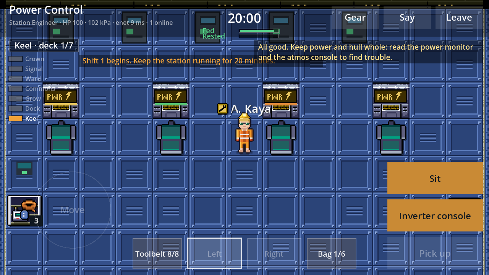
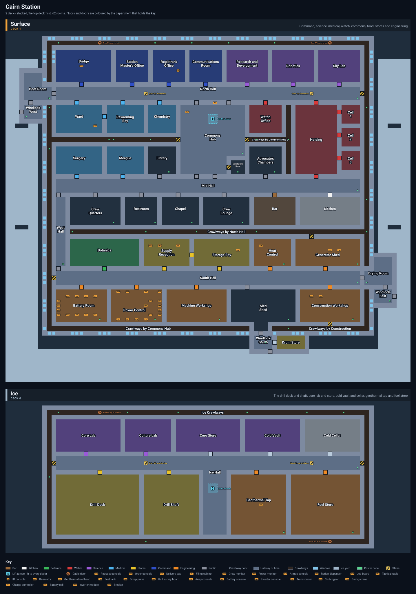
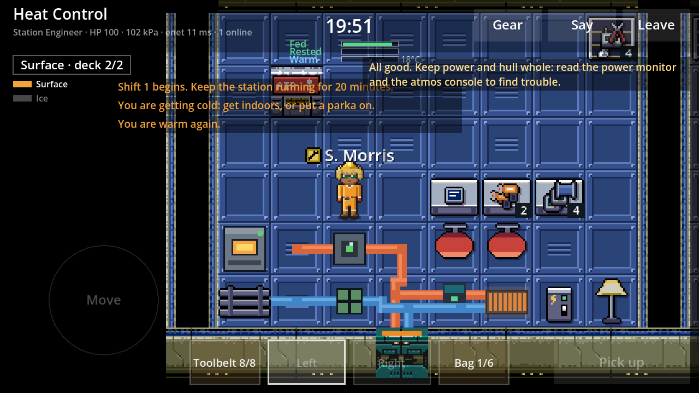
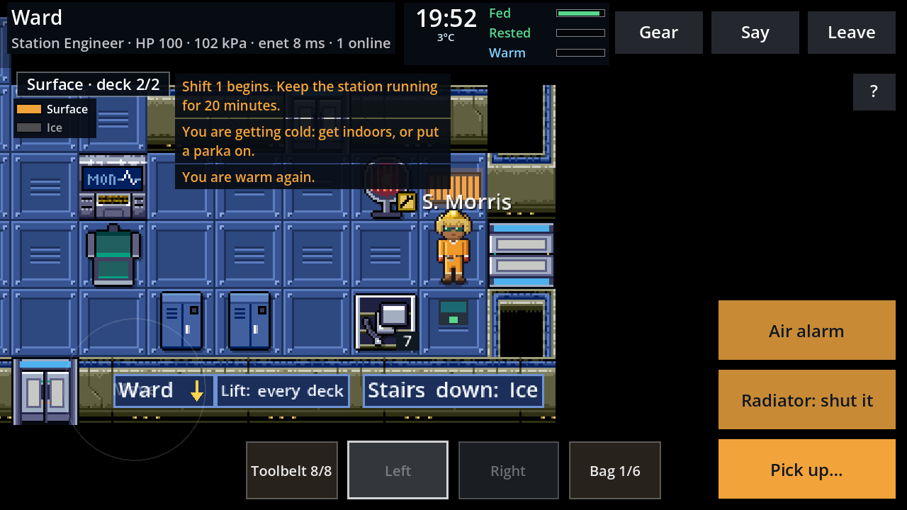
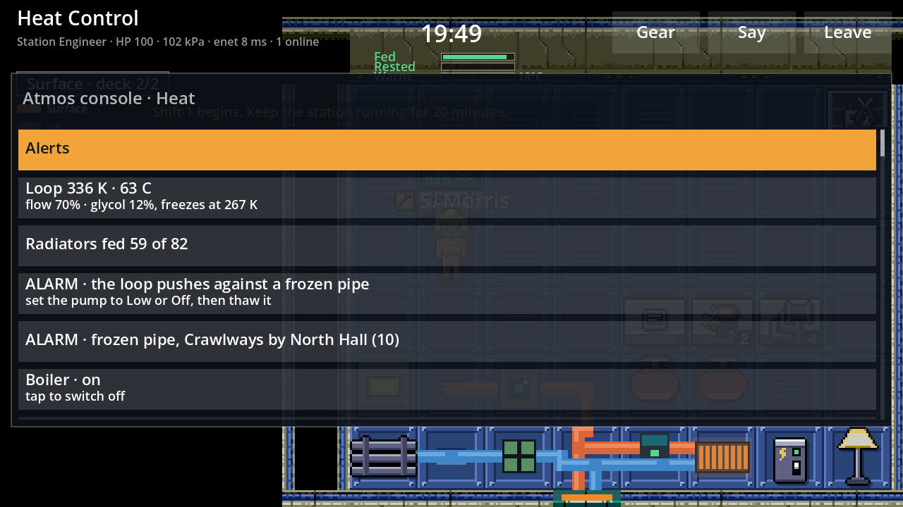
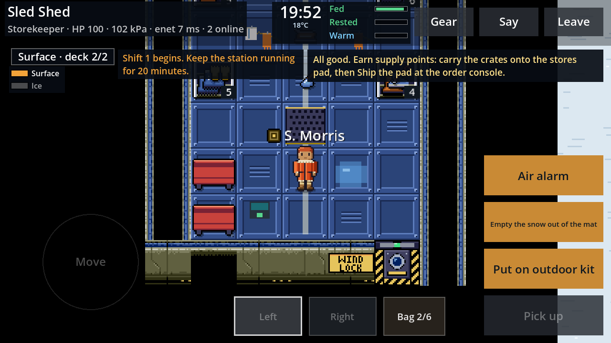
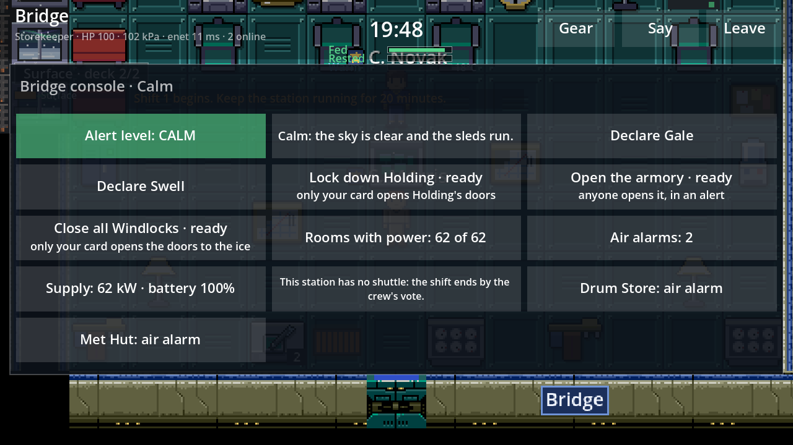

Haritalar
Üç istasyon oynanabilir: uzay istasyonu Heron, su altı istasyonu Millrace ve kutup istasyonu Cairn; lobi her vardiyadan önce aralarında oy kullanır ve telefonlar kazananı yükler. Aşağıdaki her plan tek bir resimdir: tam boyutta açmak için dokun, sonra büyütmek için iki parmakla yakınlaştır. Her oda planda adlandırılmıştır ve altında listelenmiştir.
Heron İstasyonu

Herkesin oynadığı yörünge rölesi: beyaz gövde, kafes kirişte güneş dizileri, pencerelerden yıldızlar. Tüplerin dışı ağırlıksızdır: ekip kareden kareye süzülür, duvar boyunca uzanan tutamaklara tutunur. 75 odası var.
Ekip nakil mekiği Ana Hava Kilidi ve Yanaşma Kapısı'na yanaşır ve vardiya sonunda ekibi eve götürür. 16 kayışlı koltuğu vardır; ekip onun pencerelerin önünden gelip gidişini görür.

Odalar
- Heron İstasyonu: Merkez Salon, Bar, Botanik, Kuzey Geçiş Tüpü, Doğu Geçiş Tüpü, Güney Geçiş Tüpü, Batı Geçiş Tüpü, Bilim Geçiş Tüpü, Nöbet Geçiş Tüpü, Güç Geçiş Tüpü, Yatakhane Geçiş Tüpü, Köprüüstü, İstasyon Şefi'nin Odası, Sicil Memuru'nun Odası, Sicil Memuru'nun Kamarası, Revir Kabulü, Revir, Ameliyathane, Kimya, Araştırma ve Geliştirme, Robotik, Genetik, Nöbet Bürosu, Savunma Odası, Nezarethane, Ambar Girişi, Ambar Tezgâhı, Ambar Bölmesi, Ana Hava Kilidi ve Yanaşma Kapısı, Maden Rıhtımı, Bakım Deposu, Mühendislik Holü, Hava Tesisi, Makine Atölyesi, Elektrik Atölyesi, İnşaat Atölyesi, Pil Odası, İnvertör Odası, Trafo Odası, Güneş Paneli Kontrolü, EVA Hava Kilidi, Mürettebat Yatakhanesi, Tuvalet, Kütüphane, Şapel, Servis Geçitleri · Robotik, Ekip Nakil Mekiği, Hücre 1, Mutfak, Morg, EVA Hava Kilidi 2, EVA Kapsülü, Yüksek Gerilim Kulübesi, İstasyon Şefi'nin Kamarası, İstasyon Şefi'nin Lavabosu, Toksin Laboratuvarı, Servis Geçitleri · Güneş Paneli Kontrolü, Servis Geçitleri · İstasyon Şefi'nin Kamarası, Servis Geçitleri · Sicil Memuru'nun Odası, Servis Geçitleri · EVA Hava Kilidi 2, Servis Geçitleri · Araştırma ve Geliştirme, Servis Geçitleri · Hava Tesisi, Servis Geçitleri · Revir Kabulü, Servis Geçitleri · İnşaat Atölyesi, Servis Geçitleri · Yatakhane Tüpü, Servis Geçitleri · Güney Tüpü, Servis Geçitleri · Nöbet Geçiş Tüpü, Servis Geçitleri · Botanik, Servis Geçitleri · Savunma Odası, Servis Geçitleri · Ambar Deposu, Silah Odası, Maden Mekiği, Hücre 2, Hücre 3.
Bölümler (zeminler renkli, kapılar bantlı) bar mutfak botanik nöbet bilim sağlık ambar komuta mühendislik herkese açık servis geçidi kapısı
Zeminler koridor ya da tüp servis geçitleri pencere güneş panelleri güç paneli
Makineler kehribar rozetler: REQ talep konsolu, ORD sipariş konsolu, PAD teslimat platformu, FIL evrak dolabı, CRW ekip monitörü, PWR güç monitörü, ATM atmos konsolu, RAT erzak dağıtıcısı, JOB iş panosu, TAC taktik masa, ID kimlik konsolu, AIR hava tüpü dolum noktası, MAN tank şarj manifoldu, CYL gaz tüpü portu, PRS hurda presi, SRV gövde denetim panosu, O2 oksijen tankı, N2 azot tankı, CO2 co2 deposu, EMB kor gazı deposu, MIX karıştırıcı, PRC atık işleyici, BRN yakıcı, COL atık toplayıcı, RCY geri dönüştürücü, ARR dizi konsolu, BAT batarya konsolu, INV invertör konsolu, TRF trafo, SWG şalt tesisi, CRN portal vinç, CTL şarj denetleyicisi, CEL batarya hücresi, MOD invertör modülü, BRK sigorta.
Odalar bir tablo olarak
| Oda | Orada ne var | Kim girer |
|---|---|---|
| Merkez Salon | iş panosu, 6 tezgâh, 20 koltuk, 10 masa | herkes |
| Bar | erzak dağıtıcısı, 2 kepenkli servis penceresi, Barmen buradan başlar, 15 koltuk, 2 eşya, 3 raf, bir bar karıştırıcısı, 7 masa | herkes |
| Botanik | Botanikçi buradan başlar, 10 ekim tepsisi, 2 eşya, 2 raf | Botanikçi (botanik erişimi) |
| Kuzey Geçiş Tüpü | 1 kepenkli servis penceresi, 2 tezgâh | herkes |
| Doğu Geçiş Tüpü | — | herkes |
| Güney Geçiş Tüpü | — | herkes |
| Batı Geçiş Tüpü | — | herkes |
| Bilim Geçiş Tüpü | — | herkes |
| Nöbet Geçiş Tüpü | 1 kepenkli servis penceresi | herkes |
| Güç Geçiş Tüpü | — | herkes |
| Yatakhane Geçiş Tüpü | — | herkes |
| Köprüüstü | taktik masa ve 3 konsol tekrarlayıcısı, 16 koltuk, 4 masa, bir eşya, kilitli dolap (komuta erişimi) | Sicil Memuru (komuta erişimi) |
| İstasyon Şefi'nin Odası | İstasyon Şefi buradan başlar, 2 eşya, 3 koltuk, 2 masa | Sicil Memuru (komuta erişimi) |
| Sicil Memuru'nun Odası | 1 kepenkli servis penceresi, kimlik konsolu, Sicil Memuru buradan başlar, bir koltuk, bir eşya, bir masa, kilitli eşya (komuta erişimi) | Sicil Memuru (komuta erişimi) |
| Sicil Memuru'nun Kamarası | 2 masa, 2 koltuk, kilitli dolap (komuta erişimi) | Sicil Memuru (komuta erişimi) |
| Revir Kabulü | 3 kepenkli servis penceresi, 6 tezgâh | herkes |
| Revir | 2 kepenkli servis penceresi, ekip monitörü, Doktor buradan başlar, 6 masa, 7 koltuk, bir eşya, kilitli dolap (sağlık erişimi), kilitli dolap (sağlık erişimi) | Doktor (sağlık erişimi) |
| Ameliyathane | 3 eşya, bir koltuk, bir raf | Doktor (sağlık erişimi) |
| Kimya | 1 kepenkli servis penceresi, 3 koltuk, 3 masa, bir dolap, 3 raf | Doktor (sağlık erişimi) |
| Araştırma ve Geliştirme | Bilim İnsanı buradan başlar, 8 koltuk, 4 masa | Bilim İnsanı (bilim erişimi) |
| Robotik | 2 raf, 4 koltuk, bir masa | Bilim İnsanı (bilim erişimi) |
| Genetik | 2 masa, 2 koltuk | Bilim İnsanı (bilim erişimi) |
| Nöbet Bürosu | 1 kepenkli servis penceresi, Nöbet Görevlisi buradan başlar, 3 masa, 2 eşya, bir koltuk, 2 tezgâh | Nöbet Görevlisi ve Avukat (nöbet erişimi) |
| Savunma Odası | Avukat buradan başlar, 3 koltuk, 3 eşya, 2 masa | herkes |
| Nezarethane | — | Nöbet Görevlisi ve Avukat (nöbet erişimi) |
| Ambar Girişi | talep konsolu, 2 kepenkli servis penceresi, bir koltuk | herkes |
| Ambar Tezgâhı | sipariş konsolu, dosya dolabı, 1 kepenkli servis penceresi, Ambar Görevlisi buradan başlar, 3 masa, 2 koltuk, bir eşya | Ambar Görevlisi ve Madenci (ambar erişimi) |
| Ambar Bölmesi | teslimat platformu, kilitli dolap (ambar erişimi) | Ambar Görevlisi ve Madenci (ambar erişimi) |
| Ana Hava Kilidi ve Yanaşma Kapısı | 4 koltuk | herkes |
| Maden Rıhtımı | 1 kepenkli servis penceresi, Madenci buradan başlar, 3 masa, 4 koltuk | Ambar Görevlisi ve Madenci (ambar erişimi) |
| Bakım Deposu | Bakım Görevlisi buradan başlar, 3 raf | İstasyon Mühendisi, Madenci ve Bakım Görevlisi (bakım erişimi) |
| Mühendislik Holü | bir raf | herkes |
| Hava Tesisi | atmos alarm konsolu, bir koltuk, 6 raf, 4 masa, 2 dolap | İstasyon Mühendisi (mühendislik erişimi) |
| Makine Atölyesi | İstasyon Mühendisi buradan başlar, 9 raf, 2 masa, bir torna, bir dolap | İstasyon Mühendisi (mühendislik erişimi) |
| Elektrik Atölyesi | 9 raf, 3 masa, 2 dolap, bir sarım tezgâhı | İstasyon Mühendisi (mühendislik erişimi) |
| İnşaat Atölyesi | 10 raf, 2 masa, bir koltuk, kilitli dolap (mühendislik erişimi) | İstasyon Mühendisi (mühendislik erişimi) |
| Pil Odası | pil bankası (8 hücre), bir koltuk, 4 raf | İstasyon Mühendisi (mühendislik erişimi) |
| İnvertör Odası | 4 invertör modülü, 3 raf | İstasyon Mühendisi (mühendislik erişimi) |
| Trafo Odası | güç monitörü, bir koltuk, bir raf, 2 dolap, 2 masa | İstasyon Mühendisi (mühendislik erişimi) |
| Güneş Paneli Kontrolü | dizi, pil ve invertör konsolları ve 5 şarj denetleyicisi, bir koltuk | İstasyon Mühendisi (mühendislik erişimi) |
| EVA Hava Kilidi | kilitli dolap (mühendislik erişimi) | İstasyon Mühendisi (mühendislik erişimi) |
| Mürettebat Yatakhanesi | ekibin uyuduğu yer, 13 koltuk, 16 dolap, 5 masa, 8 tezgâh, bir eşya | herkes |
| Tuvalet | 3 koltuk, bir tezgâh, 2 eşya, bir dolap | herkes |
| Kütüphane | 5 eşya, 4 koltuk, 2 masa | herkes |
| Şapel | Manevi Danışman buradan başlar, 4 tezgâh, 2 masa, bir eşya | herkes |
| Servis Geçitleri · Robotik | 2 raf, bir dolap | İstasyon Mühendisi, Madenci ve Bakım Görevlisi (bakım erişimi) |
| Ekip Nakil Mekiği | 16 koltuk, güç paneli yok | herkes |
| Hücre 1 | bir tezgâh, kilitli dolap (nöbet erişimi) | Nöbet Görevlisi ve Avukat (nöbet erişimi) |
| Mutfak | Şef buradan başlar, 3 koltuk, 3 masa, 2 ocak, bir dolap, kilitli dolap (mutfak ya da botanik erişimi) | Şef (mutfak erişimi) |
| Morg | 5 eşya | Doktor (sağlık erişimi) |
| EVA Hava Kilidi 2 | — | İstasyon Mühendisi, Madenci ve Bakım Görevlisi (bakım erişimi) |
| EVA Kapsülü | — | İstasyon Mühendisi (mühendislik erişimi) |
| Yüksek Gerilim Kulübesi | trafo, şalt tesisi (4 sigorta) ve portal vinç, 2 raf | İstasyon Mühendisi (mühendislik erişimi) |
| İstasyon Şefi'nin Kamarası | bir koltuk, kilitli dolap (komuta erişimi) | Sicil Memuru (komuta erişimi) |
| İstasyon Şefi'nin Lavabosu | bir eşya, bir koltuk | Sicil Memuru (komuta erişimi) |
| Toksin Laboratuvarı | 2 masa, 2 koltuk | Bilim İnsanı (bilim erişimi) |
| Servis Geçitleri · Güneş Paneli Kontrolü | bir depo sandığı | İstasyon Mühendisi, Madenci ve Bakım Görevlisi (bakım erişimi) |
| Servis Geçitleri · İstasyon Şefi'nin Kamarası | bir depo sandığı | İstasyon Mühendisi, Madenci ve Bakım Görevlisi (bakım erişimi) |
| Servis Geçitleri · Sicil Memuru'nun Odası | bir depo sandığı | İstasyon Mühendisi, Madenci ve Bakım Görevlisi (bakım erişimi) |
| Servis Geçitleri · EVA Hava Kilidi 2 | bir raf, bir depo sandığı | İstasyon Mühendisi, Madenci ve Bakım Görevlisi (bakım erişimi) |
| Servis Geçitleri · Araştırma ve Geliştirme | bir depo sandığı | İstasyon Mühendisi, Madenci ve Bakım Görevlisi (bakım erişimi) |
| Servis Geçitleri · Hava Tesisi | bir dolap, bir depo sandığı, bir raf | İstasyon Mühendisi, Madenci ve Bakım Görevlisi (bakım erişimi) |
| Servis Geçitleri · Revir Kabulü | — | İstasyon Mühendisi, Madenci ve Bakım Görevlisi (bakım erişimi) |
| Servis Geçitleri · İnşaat Atölyesi | bir dolap | İstasyon Mühendisi, Madenci ve Bakım Görevlisi (bakım erişimi) |
| Servis Geçitleri · Yatakhane Tüpü | bir dolap | İstasyon Mühendisi, Madenci ve Bakım Görevlisi (bakım erişimi) |
| Servis Geçitleri · Güney Tüpü | — | İstasyon Mühendisi, Madenci ve Bakım Görevlisi (bakım erişimi) |
| Servis Geçitleri · Nöbet Geçiş Tüpü | bir dolap, bir depo sandığı | İstasyon Mühendisi, Madenci ve Bakım Görevlisi (bakım erişimi) |
| Servis Geçitleri · Botanik | bir depo sandığı | İstasyon Mühendisi, Madenci ve Bakım Görevlisi (bakım erişimi) |
| Servis Geçitleri · Savunma Odası | bir depo sandığı | İstasyon Mühendisi, Madenci ve Bakım Görevlisi (bakım erişimi) |
| Servis Geçitleri · Ambar Deposu | bir raf | İstasyon Mühendisi, Madenci ve Bakım Görevlisi (bakım erişimi) |
| Silah Odası | kilitli dolap (tüm alanlar erişimi) | Nöbet Görevlisi ve Avukat (nöbet erişimi) |
| Maden Mekiği | 6 koltuk | Ambar Görevlisi ve Madenci (ambar erişimi) |
| Maden Mekiği | 6 koltuk | Ambar Görevlisi ve Madenci (ambar erişimi) |
| Hücre 2 | bir tezgâh, kilitli dolap (nöbet erişimi) | Nöbet Görevlisi ve Avukat (nöbet erişimi) |
| Hücre 3 | bir tezgâh, kilitli dolap (nöbet erişimi) | Nöbet Görevlisi ve Avukat (nöbet erişimi) |
Araştırma programı
Bilim İnsanı haritayı okur: bu istasyonun araştırma programı ortak konulardan (servo takımları, basınç contası, atel kafesi, kültür çubuğu, sensör kartı, Ambar Görevlisi taşıma dronu ve korumalı siperlik) ve beş kendine özgü konudan oluşur. Bir okuma, cihazın başında herkes tarafından, eşya olmadan, 20 saniyede yapılır; bir başlangıç, Direktörlük'ün hibesinden araştırma puanı harcar ve bir yayın bundan fazlasını geri öder.
| Konu | Başlangıç / ödeme | Gerektirir | Numune | Verdikleri |
|---|---|---|---|---|
| Panel numune testi | 20 / 35 | yok | çatlak bir panel ya da bir gövde plakası: EVA'da bir diziden kesilmiş bir kupon | İstasyon Mühendisi: bir panel fırçası (bir paneli yüzde 30 daha hızlı temizler); İstasyon Şefi: Vardiya Denetimi'nde dizi sağlığı satırı |
| Mafsal gresi ve cıvatalar | 25 / 40 | Servo takımları | Güneş Paneli Kontrolü'ndeki günlükte bir eklem aşınma okuması (zamanlı bir okuma, eşyasız) | İstasyon Mühendisi: bir eklem kiti (izleme eklemi onarımı üçte bir daha kısa sürer) |
| Vakum sızdırmazlığı | 30 / 50 | Basınç contası | Madencinin getirdiği cevher tozu; conta kuponu vakum odasında çalışır | İstasyon Mühendisi: bir conta boncuğu (yamalanmış duvar yarı hızda yıpranır); Madenci: kapalı bir numune kesesi (cevher torbası 2 cevher daha alır) |
| Bağlantı payı | 30 / 45 | Sensör kartı | Köprüüstü'ndeki röle test rafında herkesin alabildiği bir sinyal okuması (zamanlı bir okuma) | Nöbet Görevlisi: bir bağlantı ölçer (röle payını gösterir); İstasyon Şefi: Vardiya Denetimi'nde ve Köprüüstü konsolunda bağlantı payı satırı; Ambar Görevlisi: bağlantı zayıfken işaretlenen manifestolar |
| EVA halat makarası | 40 / 65 | Korumalı siperlik, Vakum sızdırmazlığı | kapta denenen bir plaka ve bir ip kuponu | İstasyon Mühendisi: bir ip makarası (tüp uyarısından sonra bir hava yedeği); Madenci: aynı makara; Doktor: Revir'de bir kurtarma feneri ve dolu bir hava tankı |


Millrace İstasyonu

Derin istasyon: deniz tabanının üstünde üç küçük güvertede 61 oda; toplamda yaklaşık Heron kadar büyük. Her güverte, çevresinde oda kümeleri ve aralarında açık su olan bir salondur; bu yüzden hemen her odanın denize açılan bir penceresi vardır. Yukarıdan: Taç (Köprüüstü ve komuta ofisleri, hücreleriyle nöbet, Avukat, banyosuyla yatakhane, yemek, içmek ve birlikte oturmak için tek bir Yemek Salonu ve Bar, ona hizmet veren mutfak ve botanik), yaklaşık on iki metre derinde; Rıhtım (Revir, herkese açık kabulünün arkasında; ameliyathane, morg ve kimya, şapel, deniz laboratuvarı, robotik ve araştırma, Maden Denizaltısı ve atık tesisi); Omurga (mühendislik: güç zinciri, atölyeler, hava tesisi, ambar ve Dalış Havuzu); ve bunların altında, akıntı türbinleri ve maden sahasıyla Deniz Dibi. Güverteler merdivenlerle, arabalar için bir asansörle, iki kablo yükselticisiyle ve Dalış Havuzu'yla birleşir: Dalış Havuzu zemininde açık deniz olan kuru bir odadır; hava tüplü, kapalı bir giysideki dalgıç içeri adım atar ve deniz tabanında çıkar. Odalar arasındaki bakım şaftlarında elektrik panelleri ve mühendisin kartının açmadığı odalar için uzak hava alarmları bulunur. Kapı bantları bölümü söyler: turuncu mühendislik, açık mavi sağlık, koyu mavi komuta, kırmızı nöbet, sarı ambar, mor bilim, yeşil botanik, beyaz mutfak, herkes için gri.
Ekip nakil denizaltısı, Dalış Havuzu'nun altındaki kendi bölmesinde yüzeye çıkar, Dalış Havuzu'na tek kapıyla bağlıdır ve vardiya sonunda ekibi eve götürür. 17 kayışlı koltuğu vardır; dışarıdaki deniz onun halat çözüp dalışını gösterir.

Güverteler, yukarıdan aşağıya
- Taç (3. güverte), komuta, nöbet ve yasa; yaşam odaları: yatakhane, yemek salonu ve bar, mutfak ve botanik: Bar, Köprüüstü, İstasyon Şefi'nin Odası, Sicil Memuru'nun Odası, Savunma Odası, Nezarethane, Hücre 1, Nöbet Bürosu, Haberleşme Odası, Mürettebat Yatakhanesi, Yemek Salonu ve Bar, Mutfak, Botanik, Taç Salonu, Servis Geçitleri, Tuvalet, Hücre 2, Hücre 3, Görüşme Odası, Silah Odası.
- Rıhtım (2. güverte), sağlık ve bilim, şapel, maden denizaltısı ve atık tesisi: Deniz Laboratuvarı, Kimya, Revir, Revir Kabulü, Ameliyathane, Morg, Şapel, Maden Rıhtımı, Rafineri, Araştırma ve Geliştirme, Robotik, Rıhtım Salonu, Maden Denizaltısı, Servis Geçitleri, Karantina Bölmesi, Toksin Bölmesi.
- Omurga (1. güverte), mühendislik: güç zinciri, atölyeler, hava tesisi, ambar ve dalış havuzu: Servis Geçitleri, Pil Odası, Trafo Odası, Güç Kontrol, Makine Atölyesi, Bakım Deposu, Dalış Havuzu, İnşaat Atölyesi, Hava Tesisi, Ambar Tezgâhı, Ambar Bölmesi, Omurga Salonu, Ekip Nakil Denizaltısı.
- Deniz Dibi (0. güverte), dalış havuzu'nun altında geçidiyle türbin sahaları; maden sahası daha uzakta: Maden Denizaltısı.
Güverteler arası yollar
- Merdiven S0: Omurga'dan Rıhtım'a
- Merdiven S1: Omurga'dan Rıhtım'a
- Merdiven S2: Rıhtım'dan Taç'a
- Merdiven S3: Rıhtım'dan Taç'a
- Asansör E1: Omurga'dan Taç'a her güverte
- Kablo yükselticisi R0: Omurga'dan Rıhtım'a
- Kablo yükselticisi R1: Rıhtım'dan Taç'a
- Dalış Havuzu: Omurga'dan Deniz Dibi'ne
Bölümler (zeminler renkli, kapılar bantlı) bar mutfak botanik nöbet bilim sağlık ambar komuta mühendislik herkese açık servis geçidi kapısı
Zeminler koridor ya da tüp servis geçitleri pencere güneş panelleri güç paneli
Güverteler arası merdiven, iskele, asansör (kesik çizgili camgöbeği bir zemin) ve kablo yükselticisi, gittikleri güverteyle birlikte iki uçta da işaretlidir.
Makineler kehribar rozetler: REQ talep konsolu, ORD sipariş konsolu, PAD teslimat platformu, FIL evrak dolabı, CRW ekip monitörü, PWR güç monitörü, ATM atmos konsolu, RAT erzak dağıtıcısı, JOB iş panosu, TAC taktik masa, ID kimlik konsolu, AIR hava tüpü dolum noktası, PRS hurda presi, SRV gövde denetim panosu, COL atık toplayıcı, RCY geri dönüştürücü, ARR dizi konsolu, BAT batarya konsolu, INV invertör konsolu, TRF trafo, SWG şalt tesisi, CRN portal vinç, CTL şarj denetleyicisi, CEL batarya hücresi, MOD invertör modülü, BRK sigorta.
Odalar bir tablo olarak
| Oda | Orada ne var | Kim girer |
|---|---|---|
| Servis Geçitleri | — | İstasyon Mühendisi, Madenci ve Bakım Görevlisi (bakım erişimi) |
| Pil Odası | pil bankası (8 hücre), 4 invertör modülü, 2 raf, 2 masa, 2 koltuk | İstasyon Mühendisi (mühendislik erişimi) |
| Trafo Odası | trafo, şalt tesisi (4 sigorta) ve portal vinç, bir raf, bir sarım tezgâhı, bir dolap, 2 masa | İstasyon Mühendisi (mühendislik erişimi) |
| Güç Kontrol | güç monitörü, dizi, pil ve invertör konsolları ve 4 şarj denetleyicisi, 6 koltuk, 2 raf, bir dolap, 2 masa | İstasyon Mühendisi (mühendislik erişimi) |
| Makine Atölyesi | İstasyon Mühendisi buradan başlar, 8 raf, bir torna, 4 masa, 4 koltuk, 2 dolap | İstasyon Mühendisi (mühendislik erişimi) |
| Bakım Deposu | Bakım Görevlisi buradan başlar, 6 raf, bir eşya, bir depo sandığı, 2 masa, bir dolap | İstasyon Mühendisi, Madenci ve Bakım Görevlisi (bakım erişimi) |
| Dalış Havuzu | 3 dolap, 3 raf, 5 tezgâh, 2 masa | herkes |
| İnşaat Atölyesi | 4 raf, 4 masa, 4 koltuk, bir dolap | İstasyon Mühendisi (mühendislik erişimi) |
| Hava Tesisi | atmos alarm konsolu, 6 raf, 3 koltuk, bir masa | İstasyon Mühendisi (mühendislik erişimi) |
| Ambar Tezgâhı | sipariş konsolu, dosya dolabı, 1 kepenkli servis penceresi, Ambar Görevlisi buradan başlar, 3 masa, 5 koltuk, bir dolap, 3 raf, 3 depo sandığı | Ambar Görevlisi ve Madenci (ambar erişimi) |
| Ambar Bölmesi | teslimat platformu, 10 raf, 6 depo sandığı, 2 masa | Ambar Görevlisi ve Madenci (ambar erişimi) |
| Omurga Salonu | talep konsolu, 1 kepenkli servis penceresi, 2 dolap, 3 tezgâh, bir koltuk | herkes |
| Ekip Nakil Denizaltısı | 17 koltuk, güç paneli yok | herkes |
| Deniz Laboratuvarı | 2 eşya, 4 koltuk, 3 raf, bir masa | Bilim İnsanı (bilim erişimi) |
| Kimya | 8 raf, bir eşya, 3 koltuk, 2 masa | Doktor (sağlık erişimi) |
| Revir | 1 kepenkli servis penceresi, ekip monitörü, Doktor buradan başlar, 5 koltuk, bir masa, bir eşya, bir dolap, 2 raf, kilitli dolap (sağlık erişimi), kilitli dolap (sağlık erişimi) | Doktor (sağlık erişimi) |
| Revir Kabulü | 1 kepenkli servis penceresi, 4 tezgâh | herkes |
| Ameliyathane | 4 eşya, bir dolap, 2 koltuk, 2 raf, bir dolap, bir masa | Doktor (sağlık erişimi) |
| Morg | 7 eşya, 2 masa, bir raf, bir koltuk, bir dolap | Doktor (sağlık erişimi) |
| Şapel | Manevi Danışman buradan başlar, 2 masa, 2 eşya, 8 tezgâh | herkes |
| Maden Rıhtımı | Madenci buradan başlar, 5 raf, 2 depo sandığı, 2 masa | Ambar Görevlisi ve Madenci (ambar erişimi) |
| Rafineri | 1 kepenkli servis penceresi, bir masa, 2 raf, bir depo sandığı | İstasyon Mühendisi, Madenci ve Bakım Görevlisi (bakım erişimi) |
| Araştırma ve Geliştirme | Bilim İnsanı buradan başlar, bir dolap, 2 masa, 3 raf, 4 koltuk | Bilim İnsanı (bilim erişimi) |
| Robotik | 6 raf, 3 koltuk, 2 masa, bir depo sandığı | Bilim İnsanı (bilim erişimi) |
| Rıhtım Salonu | 1 kepenkli servis penceresi, 3 tezgâh, 2 dolap | herkes |
| Bar | Barmen buradan başlar, 3 raf, 7 masa, 2 eşya, 2 bar karıştırıcısı | Barmen ve Tayfa (bar erişimi) |
| Köprüüstü | taktik masa ve 3 konsol tekrarlayıcısı, 2 tezgâh, 9 koltuk, 2 masa | Sicil Memuru (komuta erişimi) |
| İstasyon Şefi'nin Odası | İstasyon Şefi buradan başlar, 2 eşya, 4 koltuk, 2 masa, kilitli dolap (komuta erişimi), kilitli dolap (komuta erişimi) | Sicil Memuru (komuta erişimi) |
| Sicil Memuru'nun Odası | 1 kepenkli servis penceresi, kimlik konsolu, Sicil Memuru buradan başlar, 5 koltuk, 2 eşya, bir raf, 3 masa | Sicil Memuru (komuta erişimi) |
| Savunma Odası | Avukat buradan başlar, 3 eşya, 6 koltuk, 3 masa, 2 tezgâh | herkes |
| Nezarethane | 4 masa, 4 tezgâh, 4 koltuk, kilitli dolap (nöbet erişimi) | Nöbet Görevlisi ve Avukat (nöbet erişimi) |
| Hücre 1 | 2 koltuk, bir eşya, kilitli dolap (nöbet erişimi) | Nöbet Görevlisi ve Avukat (nöbet erişimi) |
| Nöbet Bürosu | Nöbet Görevlisi buradan başlar, 4 dolap, bir raf, 3 koltuk, 2 masa | Nöbet Görevlisi ve Avukat (nöbet erişimi) |
| Haberleşme Odası | bir raf, 4 masa, 2 koltuk, 2 eşya | Sicil Memuru (komuta erişimi) |
| Mürettebat Yatakhanesi | ekibin uyuduğu yer, 8 koltuk, 8 dolap | herkes |
| Yemek Salonu ve Bar | 1 kepenkli servis penceresi, 22 koltuk, 4 tezgâh, bir eşya, 8 masa | herkes |
| Mutfak | 1 kepenkli servis penceresi, Şef buradan başlar, 3 raf, 3 ocak, 3 masa, 3 koltuk, bir dolap, bir eşya | Şef (mutfak erişimi) |
| Botanik | Botanikçi buradan başlar, 2 raf, 12 ekim tepsisi, 2 eşya, bir depo sandığı, kilitli dolap (mutfak ya da botanik erişimi) | Botanikçi (botanik erişimi) |
| Taç Salonu | erzak dağıtıcısı, iş panosu, 1 kepenkli servis penceresi, bir eşya, 5 tezgâh, bir dolap, 2 koltuk, 2 masa | herkes |
| Maden Denizaltısı | 4 koltuk | Ambar Görevlisi ve Madenci (ambar erişimi) |
| Maden Denizaltısı | 4 koltuk | Ambar Görevlisi ve Madenci (ambar erişimi) |
| Servis Geçitleri | — | İstasyon Mühendisi, Madenci ve Bakım Görevlisi (bakım erişimi) |
| Servis Geçitleri | — | İstasyon Mühendisi, Madenci ve Bakım Görevlisi (bakım erişimi) |
| Servis Geçitleri | — | İstasyon Mühendisi, Madenci ve Bakım Görevlisi (bakım erişimi) |
| Servis Geçitleri | — | İstasyon Mühendisi, Madenci ve Bakım Görevlisi (bakım erişimi) |
| Servis Geçitleri | — | İstasyon Mühendisi, Madenci ve Bakım Görevlisi (bakım erişimi) |
| Servis Geçitleri | — | İstasyon Mühendisi, Madenci ve Bakım Görevlisi (bakım erişimi) |
| Servis Geçitleri | — | İstasyon Mühendisi, Madenci ve Bakım Görevlisi (bakım erişimi) |
| Servis Geçitleri | — | İstasyon Mühendisi, Madenci ve Bakım Görevlisi (bakım erişimi) |
| Servis Geçitleri | — | İstasyon Mühendisi, Madenci ve Bakım Görevlisi (bakım erişimi) |
| Servis Geçitleri | — | İstasyon Mühendisi, Madenci ve Bakım Görevlisi (bakım erişimi) |
| Servis Geçitleri | — | İstasyon Mühendisi, Madenci ve Bakım Görevlisi (bakım erişimi) |
| Servis Geçitleri | — | İstasyon Mühendisi, Madenci ve Bakım Görevlisi (bakım erişimi) |
| Karantina Bölmesi | bir koltuk, bir eşya | Doktor (sağlık erişimi) |
| Toksin Bölmesi | — | Bilim İnsanı (bilim erişimi) |
| Tuvalet | bir koltuk, bir eşya | Sicil Memuru (komuta erişimi) |
| Hücre 2 | 2 koltuk, bir eşya, kilitli dolap (nöbet erişimi) | Nöbet Görevlisi ve Avukat (nöbet erişimi) |
| Hücre 3 | 2 koltuk, bir eşya, kilitli dolap (nöbet erişimi) | Nöbet Görevlisi ve Avukat (nöbet erişimi) |
| Görüşme Odası | 2 koltuk, bir masa | Nöbet Görevlisi ve Avukat (nöbet erişimi) |
| Silah Odası | kilitli dolap (tüm alanlar erişimi) | Nöbet Görevlisi ve Avukat (nöbet erişimi) |
| Tuvalet | 2 koltuk, 2 eşya | herkes |
Araştırma programı
Bilim İnsanı haritayı okur: bu istasyonun araştırma programı ortak konulardan (servo takımları, basınç contası, atel kafesi, kültür çubuğu, sensör kartı, Ambar Görevlisi deniz tabanı kızağı ve korumalı siperlik) ve beş kendine özgü konudan oluşur. Bir okuma, cihazın başında herkes tarafından, eşya olmadan, 20 saniyede yapılır; bir başlangıç, Direktörlük'ün hibesinden araştırma puanı harcar ve bir yayın bundan fazlasını geri öder.
| Konu | Başlangıç / ödeme | Gerektirir | Numune | Verdikleri |
|---|---|---|---|---|
| Gövde korozyonu | 20 / 35 | yok | Deniz Laboratuvarı'ndaki korozyon rafında bekletilmek üzere bırakılmış bir gövde plakası kuponu (deney değil, bir zamanlayıcı) | İstasyon Mühendisi: bir anot şeridi (bağlandığı duvar yarı hızda yıpranır); İstasyon Şefi: Vardiya Denetimi'nde yıpranma tahmini |
| Akıntı tablosu | 25 / 40 | yok | veri terminallerinde alınan bir rotor okuması (zamanlı bir okuma) | İstasyon Mühendisi: bir rotor dengeleme kiti; Nöbet Görevlisi: dış işler panosunda bir durgun su uyarısı |
| Nodül analizi | 30 / 45 | Servo takımları | bir dalgıcın ya da madenin getirdiği bir deniz tabanı yumrusu; Toksin laboratuvarında analiz | Madenci: bir yumru sepeti (cevher torbası altı yerine dokuz alır); Ambar Görevlisi: tedarik listesinde bir yumru sandığı (sonraki aşama) |
| Pompa rotoru ve contalar | 35 / 55 | Basınç contası, Korumalı siperlik | basınç kabında çalıştırılan bir pompa kuponu | İstasyon Mühendisi: bir pompa yama kiti (bir sintine pompası gedikten sonra bir dakika daha çalışır); Hava Tesisi'nde bir yedek pompa |
| Deniz ışığı etüdü | 40 / 60 | Akıntı tablosu | hidrofon konsolunda bir lamba ve ses okuması (zamanlı bir okuma) | Madenci: bir keşif lambası (on kare içindeki zengin yumrular halkayla işaretlenir); İstasyon Şefi: Vardiya Denetimi'nde bir dalış penceresi satırı |





Cairn İstasyonu

Anvil'deki kutup istasyonu, erimemiş son buz tabakası: iki küçük güvertede 66 oda; toplamda yaklaşık Heron kadar büyük. Yüzey, kuzeyden güneye şunları barındırır: gökyüzü altında komuta ve bilim odaları; Kuzey Salonu; yaşam odaları (şapel, yatakhane, bar, kütüphaneli Ortak Salon), Avukat, silah dolabıyla nöbet, Nezarethane ve üç hücre; bir servis galerisi; botanik, mutfak ve herkese açık kabulünün arkasında Revir; Güney Salonu; ve ısı kontrolü, jeneratör, pil bankası, güç kontrolü, atölyeler, ambar ve Kızak Barakası'yla mühendislik. Aşağıdaki Buz güvertesinde karot laboratuvarı ve kütüphane, soğuk depolar, atık tesisi, sondaj rıhtımı, jeotermal kuyu, yakıt deposu ve tohum kasası bulunur. Güverteler iki merdiven, bir asansör ve iki kablo yükselticisiyle birleşir. İki Hava Kilidi (batıda ve güneyde Kızak Barakası'nın altında), turuncu bir kar çitinin ardındaki küçük bir buz avlusuna açılır; avluda dört rüzgâr direği, teslimat platformu ve kızak yolu vardır; çitin ötesinde açık kar uzanır. Bir servis geçidi halkası ve servis galerisi, odaların elektrik panellerini ve bir mühendisin kartının açmadığı odalar için uzak hava alarmlarını barındırır. Güç, dört rüzgâr direği, bir jeotermal kuyu, yakıt tanklı bir dizel jeneratör ve bir pil bankasından gelir (bkz. Elektrik). Isıtma, bir kazandan her sıcak odanın radyatörlerine giden tek bir glikol boru döngüsüdür. Sorun soğuktur:
- Cairn İstasyonu buz tabakasının üstünde durur ve sorun soğuktur. Her odanın bir sıcaklığı vardır. Radyatörler (ısıtma döngüsü, bkz. Isı) odayı termostatına doğru ısıtır (bölüm 18 C, koridor 15 C, servis geçidi 2 C); gövde, onda bir çatlak, bir delik ya da açık bir dış kapı onu dışarıdaki soğuğa doğru düşürür (yüzeyde -33 C, Buz güvertesinde -8 C); duvar yandaki odaya biraz ısı geçirir, açık kapı bağladığı iki odayı karıştırır, kapalı kapı yalıtır. Bu yüzden arkandan kapıyı kapat; kazanın yakıtı ya da pompanın elektriği kesilince (tam karartmada) istasyon yavaş yavaş donar: bir koğuş yaklaşık on dakikada donma noktasının birkaç derece üstüne iner.
- Bir odanın hava alarmı 0 C altında Uyarı, -11 C altında Tehlike der (bir servis geçidi daha soğuk olabilir: -23 ve -38'in altında). Haritada odanın rengi soğudukça maviye kayar ve soğuk bir odanın pencerelerinde kırağı büyür.
- Dışarı çıkış yolu Hava Kilitleridir (batı ve güney): aralarında bir giriş bulunan iki kapı. Biri açıkken öbür kapıyı kapalı tut: açık bir dış kapı soğuğu girişe, iki açık kapı da istasyonun içine alır. Dışarıda hava solunabilir, yalnızca soğuktur. Turuncu bir kar çiti, Hava Kilitlerinin, rüzgâr direklerinin ve teslimat alanının yanındaki avluyu çevreler: kimse onun ötesine geçemez. Her Hava Kilidi'nin raflarında dış ortam takımı bulunur.
- Avlunun birkaç kenarında buz yarılmıştır; bu yarıklar kırmızı bayraklarla ve sarı siyah bir çizgiyle işaretlidir. Buzda duran herkes, Hava Kilidi kapılarına ve avludaki direklere giden avlu halatına bağlıdır. Bir yarığa adım atarsan halat seni yakalayıp yukarı çekene dek düşersin. O birkaç saniye boyunca hiçbir şey yapamazsın; ne sağlığından ne taşıdıklarından bir şey eksilir ve görüş alanındaki herkes bunu görür.
- Açık buzda dış ortam takımını giy: parka, bere, sıcak eldiven (ucuz ya da yalıtımlı) ve bot (kar botu ya da iş botu). Eksik her parça daha çok soğuk geçirir, çıplak eller ve ayaklar donar, botsuz ayak kayabilir. Bir rafın yanında Dış takımı giy eksik her parçayı giydirir, Dış takımı çıkar onu geri asar.
- Üşüme, saatin altındaki bir göstergedir (Sıcak, Soğuk, Uyuşuk, Donuyor) ve çevrendeki sıcaklığı da gösterir. Hava 10 C'den soğukken farkın 65'e oranıyla saniyede yükselir; içeride bir parka, buzda ise tam dış ortam takımı onun yüzde 20'sini geçirir, mühürlü bir giysi yüzde 15'ini, rüzgâr onu hızlandırır; sıcak bir odada yine düşer. 90'dan itibaren acıtır: soğuktan saniyede 1 hasar (yanık havuzu, her yanık gibi). Sıcak bir yemek ya da içki bir kısmını götürür. Fırtınada (rüzgâr 60 ve üstü) açık buz bir beyaz körlüktür ve çevrende yalnızca 4 karoyu, beyaz içinde görürsün.
- Üşümenin altında her bedenin bir iç ısısı vardır; bunu bir sağlık tarayıcısından başka kimse göremez; Üşüme yüksekken yavaşça düşer, sıcakta yükselir. Hipotermi aşamalıdır: titreme (Üşüme 60 civarı), yavaşlama (80 civarı: adımların ve işin ağırlaşır), şaşkın ve sakar (95 civarı: daha da yavaş) ve sınırda bayılıp çökersin; biri seni ısıtmazsa 3 dakikada ölürsün. Mürettebat monitörü üşümüş bir beden için yalnızca soğuk der.
- Donma, açık buzda çıplak ellere ve çıplak ayaklara gelir: sıcak eldiven ve bot onu uzak tutar, parka tek başına tutmaz. Çimdiklenmiş donma (çıplakken yaklaşık 45 saniye sonra) sızlatır, işi yüzde 20 yavaşlatır ve ılık odada geçer; donmuş (yaklaşık 120 sonra) hızını yarıya indirir ve doktor ister; yaklaşık 300 saniye donmuş kalırsa ellerin ve ayakların işlevi tedavi edilene kadar vardiya boyunca kaybolur.
- Tedaviler: sıcak bir yemek ya da içecek iç ısıyı yükseltir; Isıt (ilk yardım, 8 saniye, içeride) hastayı ovar ve sarar; ısıtma battaniyesi yavaşça sarar; Koğuş'un ve Isıtma Odası'nın ısıtma lambaları altında duranı ısıtır. En iyisi sıcak banyodur: hasta Isıtma Odası'nın bir küvetine yatar (çaresiz birini doktor yatırır) ve Isıt bir dakika sürer, Doktor bunun yarısında yapar. Donmuş bir el ya da ayak ameliyat çantası ve ılık bir serum torbası ister: hastada Donmayı tedavi et (20 saniye). Sağlık tarayıcısının son satırı iç ısıyı ve donmayı okur.
Yiyecek, soğuk zincir, kızak ve kar:
- Sıcak yemek iç ısıyı ısıtır: sıcak bir yemek ya da içecek Üşümeden puan düşürür, iç ısıyı yükseltir ve bir süre daha hızlı yükselmesini sağlar (erzak yahnisi 150 saniye, çay 45 saniye). En iyi yemek, ocakta donmuş erzak, bir patates ve bir soğandan yapılan erzak yahnisidir; çözülmüş erzak daha az ısıtan sulu bir yahni verir.
- Soğuk zincir: donmuş erzak Soğuk Kiler'de, Soğuk Depo'da ve açık buzda saklanır (hava 2 C'nin altında), sıcak bir odada 2 dakika sonra çözülür ve 4 dakika sonra bozulur. Talep konsolundan verilen bir donmuş erzak siparişi, soğuk odanın dışında soğuğunu 10 dakika koruyan yalıtımlı bir sandıkta gelir ve her sandığın Tedarik Kabul'deki Ambar Görevlisi'nin soğuk zincir defterinde bir satırı vardır. Soğuk Kiler'in termometre panosu her odanın sıcaklığını listeler.
- Her 4 dakikada bir ikmal uçuşu, güney Hava Kilidi'nin dışındaki avlu alanına yalıtımlı bir donmuş erzak sandığı indirir (fırtına onu geciktirir): defter ne zaman olduğunu söyler. Ambar Görevlisi onu kızakla Stores'a taşır; kızak, 6 sandık taşıyan, buz için bir arabadır; kızak şeridini kesen kar yığınları, Bakım Görevlisi'nin küreği onları temizleyene kadar kızağı durdurur.
- Buzdan içeri giren kar taşır: kapının yanındaki bot paspası onu alır (bir paspas 3 çift botu tutar, sonra boşaltılmalıdır), kurutma ipleri onu döktürür, başka her yerde erir ve Bakım Görevlisi paspaslasın diye bir su birikintisine dönüşür. Kış bahçesi (Botanics) lambalarının altında büyür, onlarsız yavaş büyür.
- İstasyon Şefi'nin dördüncü emri her Hava Kilidi'ni 90 saniye kapatır (5 dakika sonra yeniden hazır): buza açılan kapıları yalnızca İstasyon Şefi'nin kartı açar. Üç seviye adlarını korur ve Cairn'de Fırtına tipi sığınağıdır; Nöbet Görevlisi avluyu ve Hava Kilidi yollarını devriyeler, nöbet robotları her Hava Kilidi'nde durur.
Avluda dış işler:
- Avludaki dış işler hiç kimseden zorunlu istenmez.
- Her Hava Kilidi'ndeki dış işler panosu dışarıda bekleyenleri listeler.
- Bilim İnsanı meteoroloji direğini okur ve işaretli noktalardan kar karotu alır: araştırma projeleri için saha verisi.
- Madenci buz sondaj noktasını el matkabıyla deler: rafineriye cevher ve temiz buz çıkar.
- Temiz buz mutfakta tek soğanla soğan suyu yapar, Revir'de ise yanığa soğuk kompres olur.
- Barmen buz yüzünden kalıp kırar: bir kalıp bardağa buz olur, barın buz kovasını doldurur ya da karıştırıcıda buzlu şurup olur.
- Hipotermi geçiren yaralı kızakla içeri taşınır: kızağa yatır, Hava Kilidi'nden geçir ve banyonun yanında indir.
- Dışarıda bilinci kapalı yatan birini herkes içeri çekebilir.
Isıtma döngüsü soğuğu dışarıda tutar:
- Cairn'in ısısı, Bakım Görevlisi ile İstasyon Mühendisi'nin baktığı tek bir sıcak su döngüsünden gelir. Kazan Dairesi'ndeki kazan tankındaki yakıtı yakıp glikolü ısıtır, sirkülasyon pompası (elektrik ister) onu besleme borusundan (kırmızı) peteklere ve dönüş borusundan (mavi) geri sürer; her odada duvara asılı bir petek vardır (büyük odada iki). Bir oda ancak döngü sıcakken, suyun basıncı varken ve peteğin vanası açıkken ısınır. Yakıtsız kalan kazan söner; döngünün sıcak suyu birkaç dakika yeter, odalar yavaş yavaş soğur ve hava alarmları soğuk kimseye zarar vermeden önce uyarır.
- Kazan Dairesi'nde basınç göstergesi su basıncını gösterir (90 ile 200 kPa sağlıklıdır, 60 kPa'nın altında odalar ısınmaz), doldurma vanası suyu tamamlar, yakıt besleme tankta ne kaldığını gösterir (dolu bir tank bir vardiya ve fazlasıdır) ve kazanın açma kapama düğmesi vardır. Bunlardan herhangi birinin yanında bir durum satırı kazanı, yakıtı, basıncı ve döngünün sıcaklığını okur. Bakım Görevlisi'nin kartı ve İstasyon Mühendisi'nin kartı odayı açar ve bunları çalıştırır; bir peteğin vanasını her el çevirir.
- Borular servis geçitlerinde ve Kazan Dairesi'nde açıkta, koridor ile bölümlerin zemini altında gizli uzanır: levye bir zemin karosunu kaldırıp onları gösterir, T-ray tarayıcı gizli olanları sahibine gösterir. Döngünün bir yalıtım vanası vardır; atmos konsolunun (Isı Kontrol) Isı sekmesi döngünün sıcaklığını (başta 62 C), akışı ve glikolü, odalara göre petekleri ve her alarmı listeler: hiçbir şey duyurulmaz, döngünün derdi konsoldan okunur.
- Döngü arızalanınca (akış yok ya da su 7 C'nin altında) glikolün donma noktasının (yüzde 12 glikolde -6 C) altında bir dakika kalan odanın boruları birkaç karo birkaç karo donar. Donmuş boru akışı ve ötesindeki her radyatörü keser. Pompa ona 60 saniye basarsa patlar: hat, bir İstasyon Mühendisi anahtarla boşluğa bir boru takana kadar kesik kalır (boru torna tezgâhında yapılır). Donmuş boru, odası 20 saniye ılık kalınca kendiliğinden, ısı tabancasıyla 8 saniyede ya da karşısında duran sıcak suyla çözülür: uzun bir kesintiden sonra kazanı aç, pompayı Düşük'e al (Orta ya da Yüksek'teki pompa basar ve buzu patlatır) ve Isı sekmesini izle.
Ekip uçağı Kuzey Salonu'nun doğusundaki karın üstüne iner; kapısı salondan açılan kapalı bir geçittir, bu yüzden eve dönmek için kimsenin kıyafete ihtiyacı yoktur. 15 kayışlı koltuğu vardır; kar üstünde yol alıp havalanarak uzaklaşır.

Güverteler, yukarıdan aşağıya
- Yüzey (1. güverte), komuta, bilim, nöbet, yaşam odaları, sağlık, yiyecek, ambar ve mühendislik; çitle çevrili avluya açılan iki hava kilidi: Servis Geçitleri · Kuzey Salonu, Kuzey Salonu, Güney Salonu, Bakım Deposu, Köprüüstü, İstasyon Şefi'nin Odası, Sicil Memuru'nun Odası, Haberleşme Odası, Gökyüzü Laboratuvarı, Araştırma ve Geliştirme, Robotik, Şapel, Mürettebat Yatakhanesi, Bar, Ortak Salon, Nöbet Bürosu, Nezarethane, Savunma Odası, Hücre 1, Botanik, Mutfak, Revir Kabulü, Koğuş, Ameliyathane, Kimya, Morg, Isı Kontrol, Kazan Dairesi, Jeneratör Barakası, Pil Odası, Güç Kontrol, Makine Atölyesi, İnşaat Atölyesi, Tedarik Kabul, Kızak Barakası, Batı Hava Kilidi, Güney Hava Kilidi, Ekip Uçağı, Servis Geçitleri · Kuzey Salonu 2, Servis Geçitleri · Kuzey Salonu 3, Servis Geçitleri · Kuzey Salonu 4, Servis Geçitleri · Kuzey Salonu 5, Servis Geçitleri · Güney Salonu, Servis Geçitleri · Güney Salonu 2, Servis Geçitleri · Güney Salonu 3, Servis Geçitleri · Güney Salonu 4, Servis Geçitleri · Güney Salonu 5, Kütüphane, Silah Odası, Hücre 2, Hücre 3, Kiler, Isıtma Bölmesi.
- Buz (0. güverte), karot laboratuvarı ve kütüphane, soğuk depolar ve tohum kasası, atık tesisi, sondaj rıhtımı, jeotermal kuyu ve yakıt deposu: Buz Servis Geçitleri, Buz Salonu, Karot Laboratuvarı, Karot Kütüphanesi, Soğuk Mahzen, Soğuk Kiler, Rafineri, Sondaj Rıhtımı, Jeotermal Kuyu, Yakıt Deposu, Mahzen Ön Odası, Tohum Mahzeni, Soğuk Depo.
Güverteler arası yollar
- Merdiven S0: Buz'dan Yüzey'e
- Merdiven S1: Buz'dan Yüzey'e
- Asansör E1: Buz'dan Yüzey'e her güverte
- Kablo yükselticisi R0: Buz'dan Yüzey'e
- Kablo yükselticisi R1: Buz'dan Yüzey'e
Bölümler (zeminler renkli, kapılar bantlı) bar mutfak botanik nöbet bilim sağlık ambar komuta mühendislik herkese açık servis geçidi kapısı
Zeminler koridor ya da tüp servis geçitleri pencere buz avlusu kar çiti güç paneli
Güverteler arası merdiven, iskele, asansör (kesik çizgili camgöbeği bir zemin) ve kablo yükselticisi, gittikleri güverteyle birlikte iki uçta da işaretlidir.
Makineler kehribar rozetler: REQ talep konsolu, ORD sipariş konsolu, PAD teslimat platformu, FIL evrak dolabı, CRW ekip monitörü, PWR güç monitörü, ATM atmos konsolu, RAT erzak dağıtıcısı, JOB iş panosu, TAC taktik masa, ID kimlik konsolu, GEN jeneratör, GEO jeotermal kuyu başı, TNK yakıt tankı, PRS hurda presi, SRV gövde denetim panosu, LDG soğuk zincir defteri, THM termometre panosu, COL atık toplayıcı, RCY geri dönüştürücü, ARR dizi konsolu, BAT batarya konsolu, INV invertör konsolu, TRF trafo, SWG şalt tesisi, CRN portal vinç, CTL şarj denetleyicisi, CEL batarya hücresi, MOD invertör modülü, BRK sigorta.
Odalar bir tablo olarak
| Oda | Orada ne var | Kim girer |
|---|---|---|
| Buz Servis Geçitleri | — | İstasyon Mühendisi, Madenci ve Bakım Görevlisi (bakım erişimi) |
| Buz Salonu | 1 kepenkli servis penceresi, 2 dolap, bir masa | herkes |
| Karot Laboratuvarı | 3 raf, bir dolap, 3 koltuk, 3 masa | Bilim İnsanı (bilim erişimi) |
| Karot Kütüphanesi | 8 raf, 4 koltuk, 2 masa | Bilim İnsanı (bilim erişimi) |
| Soğuk Mahzen | 5 dolap, bir raf, bir koltuk, bir masa | Bilim İnsanı (bilim erişimi) |
| Soğuk Kiler | 3 raf, 3 depo sandığı, bir masa | Şef (mutfak erişimi) |
| Rafineri | 3 raf | İstasyon Mühendisi, Madenci ve Bakım Görevlisi (bakım erişimi) |
| Sondaj Rıhtımı | Madenci buradan başlar, 5 raf, bir dolap, 2 depo sandığı, 2 masa, 2 koltuk, bir ocak | Ambar Görevlisi ve Madenci (ambar erişimi) |
| Jeotermal Kuyu | 3 raf, 2 masa | İstasyon Mühendisi (mühendislik erişimi) |
| Yakıt Deposu | bir raf, 5 depo sandığı, bir masa | İstasyon Mühendisi (mühendislik erişimi) |
| Mahzen Ön Odası | bir raf, 2 tezgâh, bir masa, bir koltuk, kilitli dolap (bilim ya da botanik erişimi) | herkes |
| Tohum Mahzeni | 8 dolap | Botanikçi (botanik erişimi) |
| Servis Geçitleri · Kuzey Salonu | — | İstasyon Mühendisi, Madenci ve Bakım Görevlisi (bakım erişimi) |
| Kuzey Salonu | 2 tezgâh, 2 dolap | herkes |
| Güney Salonu | talep konsolu, 1 kepenkli servis penceresi, 2 tezgâh, 2 dolap | herkes |
| Bakım Deposu | Bakım Görevlisi buradan başlar, 6 raf, bir dolap, bir eşya | İstasyon Mühendisi, Madenci ve Bakım Görevlisi (bakım erişimi) |
| Köprüüstü | taktik masa ve 3 konsol tekrarlayıcısı, bir eşya, 7 koltuk, 2 masa, kilitli dolap (komuta erişimi) | Sicil Memuru (komuta erişimi) |
| İstasyon Şefi'nin Odası | İstasyon Şefi buradan başlar, 4 koltuk, 4 eşya, 2 masa, kilitli dolap (komuta erişimi), kilitli dolap (komuta erişimi) | Sicil Memuru (komuta erişimi) |
| Sicil Memuru'nun Odası | kimlik konsolu, Sicil Memuru buradan başlar, 4 koltuk, 2 eşya, bir raf, bir masa | Sicil Memuru (komuta erişimi) |
| Haberleşme Odası | 2 eşya, bir raf, bir koltuk, 4 masa | Sicil Memuru (komuta erişimi) |
| Gökyüzü Laboratuvarı | 4 koltuk, bir raf, 2 masa | Bilim İnsanı (bilim erişimi) |
| Araştırma ve Geliştirme | Bilim İnsanı buradan başlar, 2 raf, bir dolap, 8 koltuk, 4 masa | Bilim İnsanı (bilim erişimi) |
| Robotik | 4 raf, 3 koltuk, 2 masa, bir depo sandığı | Bilim İnsanı (bilim erişimi) |
| Şapel | Manevi Danışman buradan başlar, 4 tezgâh, 2 eşya, 2 masa | herkes |
| Mürettebat Yatakhanesi | 10 koltuk, 6 dolap, 4 eşya | herkes |
| Bar | Barmen buradan başlar, 2 eşya, 4 koltuk, 3 masa, 3 bar karıştırıcısı, 3 raf, bir ocak | Barmen ve Tayfa (bar erişimi) |
| Ortak Salon | erzak dağıtıcısı, iş panosu, 1 kepenkli servis penceresi, Tayfa buradan başlar, ekibin uyuduğu yer, bir ocak, 2 eşya, 2 tezgâh, 4 koltuk, 4 masa | herkes |
| Nöbet Bürosu | Nöbet Görevlisi buradan başlar, bir eşya, 3 koltuk, bir masa, kilitli dolap (nöbet erişimi), kilitli dolap (nöbet erişimi) | Nöbet Görevlisi ve Avukat (nöbet erişimi) |
| Nezarethane | 2 tezgâh, 2 koltuk, bir masa, kilitli dolap (nöbet erişimi) | Nöbet Görevlisi ve Avukat (nöbet erişimi) |
| Savunma Odası | Avukat buradan başlar, 4 eşya, 3 koltuk, 2 masa | herkes |
| Hücre 1 | bir eşya, 2 koltuk, kilitli dolap (nöbet erişimi) | Nöbet Görevlisi ve Avukat (nöbet erişimi) |
| Botanik | Botanikçi buradan başlar, 2 raf, 12 ekim tepsisi, 4 eşya, kilitli dolap (mutfak ya da botanik erişimi) | Botanikçi (botanik erişimi) |
| Mutfak | 1 kepenkli servis penceresi, Şef buradan başlar, 2 ocak, 2 raf, bir koltuk, 2 masa, bir eşya | Şef (mutfak erişimi) |
| Revir Kabulü | 3 tezgâh, bir eşya, 3 koltuk, 2 masa | herkes |
| Koğuş | ekip monitörü, Doktor buradan başlar, 6 koltuk, bir eşya, 2 dolap, bir raf | Doktor (sağlık erişimi) |
| Ameliyathane | 4 eşya, bir dolap, bir dolap, bir raf, bir koltuk | Doktor (sağlık erişimi) |
| Kimya | 5 raf, bir eşya, bir koltuk, bir masa | Doktor (sağlık erişimi) |
| Morg | 6 eşya, bir masa, bir dolap | Doktor (sağlık erişimi) |
| Isı Kontrol | atmos alarm konsolu, İstasyon Mühendisi buradan başlar, 2 raf, bir koltuk, bir masa | İstasyon Mühendisi (mühendislik erişimi) |
| Kazan Dairesi | — | İstasyon Mühendisi, Madenci ve Bakım Görevlisi (bakım erişimi) |
| Jeneratör Barakası | 4 raf, bir depo sandığı | İstasyon Mühendisi (mühendislik erişimi) |
| Pil Odası | pil bankası (8 hücre), 4 invertör modülü, 2 raf, 2 masa | İstasyon Mühendisi (mühendislik erişimi) |
| Güç Kontrol | güç monitörü, dizi, pil ve invertör konsolları ve 4 şarj denetleyicisi, trafo, şalt tesisi (4 sigorta) ve portal vinç, 4 koltuk, bir raf, bir sarım tezgâhı, bir dolap | İstasyon Mühendisi (mühendislik erişimi) |
| Makine Atölyesi | 5 raf, bir torna, 4 masa, 4 koltuk, bir dolap | İstasyon Mühendisi (mühendislik erişimi) |
| İnşaat Atölyesi | 4 raf, 2 masa, bir dolap | İstasyon Mühendisi (mühendislik erişimi) |
| Tedarik Kabul | sipariş konsolu, teslimat platformu, dosya dolabı, 1 kepenkli servis penceresi, Ambar Görevlisi buradan başlar, bir masa, 2 koltuk, bir dolap, 2 raf, 2 depo sandığı | Ambar Görevlisi ve Madenci (ambar erişimi) |
| Kızak Barakası | 5 raf, bir dolap, 2 tezgâh | herkes |
| Batı Hava Kilidi | bir raf | herkes |
| Güney Hava Kilidi | 2 raf | herkes |
| Ekip Uçağı | 15 koltuk, güç paneli yok | herkes |
| Soğuk Depo | 3 raf, bir dolap, bir depo sandığı | Şef (mutfak erişimi) |
| Servis Geçitleri · Kuzey Salonu 2 | — | İstasyon Mühendisi, Madenci ve Bakım Görevlisi (bakım erişimi) |
| Servis Geçitleri · Kuzey Salonu 3 | — | İstasyon Mühendisi, Madenci ve Bakım Görevlisi (bakım erişimi) |
| Servis Geçitleri · Kuzey Salonu 4 | — | İstasyon Mühendisi, Madenci ve Bakım Görevlisi (bakım erişimi) |
| Servis Geçitleri · Kuzey Salonu 5 | — | İstasyon Mühendisi, Madenci ve Bakım Görevlisi (bakım erişimi) |
| Servis Geçitleri · Güney Salonu | — | İstasyon Mühendisi, Madenci ve Bakım Görevlisi (bakım erişimi) |
| Servis Geçitleri · Güney Salonu 2 | — | İstasyon Mühendisi, Madenci ve Bakım Görevlisi (bakım erişimi) |
| Servis Geçitleri · Güney Salonu 3 | — | İstasyon Mühendisi, Madenci ve Bakım Görevlisi (bakım erişimi) |
| Servis Geçitleri · Güney Salonu 4 | — | İstasyon Mühendisi, Madenci ve Bakım Görevlisi (bakım erişimi) |
| Servis Geçitleri · Güney Salonu 5 | — | İstasyon Mühendisi, Madenci ve Bakım Görevlisi (bakım erişimi) |
| Kütüphane | 3 eşya, bir koltuk, bir masa | herkes |
| Silah Odası | 2 raf, kilitli dolap (tüm alanlar erişimi) | Nöbet Görevlisi ve Avukat (nöbet erişimi) |
| Hücre 2 | bir eşya, 2 koltuk, kilitli dolap (nöbet erişimi) | Nöbet Görevlisi ve Avukat (nöbet erişimi) |
| Hücre 3 | bir eşya, 2 koltuk, kilitli dolap (nöbet erişimi) | Nöbet Görevlisi ve Avukat (nöbet erişimi) |
| Kiler | 3 raf | Şef (mutfak erişimi) |
| Isıtma Bölmesi | 2 koltuk, 3 eşya, bir raf | Doktor (sağlık erişimi) |
Araştırma programı
Bilim İnsanı haritayı okur: bu istasyonun araştırma programı ortak konulardan (servo takımları, basınç contası, atel kafesi, kültür çubuğu, sensör kartı, Ambar Görevlisi taşıma dronu ve korumalı siperlik) ve beş kendine özgü konudan oluşur. Bir okuma, cihazın başında herkes tarafından, eşya olmadan, 20 saniyede yapılır; bir başlangıç, Direktörlük'ün hibesinden araştırma puanı harcar ve bir yayın bundan fazlasını geri öder.
| Konu | Başlangıç / ödeme | Gerektirir | Numune | Verdikleri |
|---|---|---|---|---|
| Buz karotu kaydı | 18 / 30 | yok | Madencinin açtığı, çekirdek testeresinde kesilen bir buz çekirdeği | Madenci: daha keskin bir uç (dörtte bir daha hızlı deler); Bilim İnsanı: kaydedilen her kar karotu için 3 Müdürlük puanı, vardiyada en çok 6 |
| Rüzgâr ve sürüklenme | 25 / 40 | yok | Gökyüzü Laboratuvarı'nda okunan bir anemometre günlüğü (zamanlı bir okuma) | Nöbet Görevlisi: Hava Kilidi panosunda bir dakika sonrasının tahmin satırı; İstasyon Şefi: Köprüüstü konsolunda Durgun, Dalgalı ve Fırtına rüzgâr kartı |
| Isı kaybı | 30 / 45 | Servo takımları | ısıl düzenekte bir duvar kuponu | İstasyon Mühendisi: bir yalıtım yaması (bir oda duvarlarından yüzde 40 daha az ısı kaybeder); Ambar Görevlisi: Soğuk Depo termometre panosunda işaretlenen sızdıran ve yamalı odalar |
| Glikol hattı | 35 / 55 | Sensör kartı, Korumalı siperlik | Isı Kontrol'den bir glikol numunesi | İstasyon Mühendisi: donmuş bir kolu çözen bir glikol takviyesi; Bakım Görevlisi: Bakım Görevlisi'nin Deposu'nda yedek bir pompa takımı |
| Soğuk zincir | 40 / 65 | Korumalı siperlik, Isı kaybı | Soğuk Kasa'da okunan bir sıcaklık günlüğü (zamanlı bir okuma) | Ambar Görevlisi: bir sandık mührü (mühürlü sandık soğuğunu iki kat uzun tutar); Doktor: Revir'de bir soğuk kutu (yalnızca donanım); İstasyon Şefi: Vardiya Denetimi'nde bir bozulma satırı |










